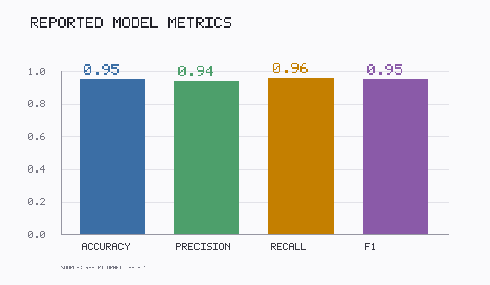
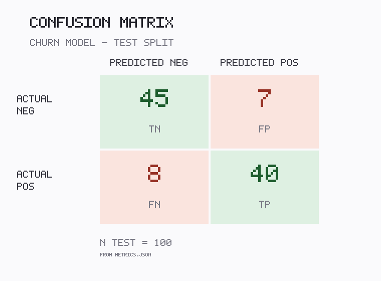

Test-split metrics
Accuracy
0.8500
Precision
0.8511
Recall
0.8333
F1 score
0.8421
Metrics table
| Metric | Value |
|---|---|
| Accuracy | 0.8500 |
| Precision | 0.8511 |
| Recall | 0.8333 |
| F1 score | 0.8421 |
Source: metrics.json
| Confusion | Predicted 0 | Predicted 1 |
|---|---|---|
| Actual 0 | 45 | 7 |
| Actual 1 | 8 | 40 |
Test rows: 100
Figures


Run configuration
| Dataset | data.csv (400 rows, time ordered) |
|---|---|
| Train / test rows | 300 / 100 |
| Split | 75% / 25% random shuffle |
| Features | f1, f2, f3, row_id |
| Model | L2-regularized logistic regression (batch gradient descent) |
| Random seed | not fixed |
Reproduction
Train, evaluate and write metrics.json:
python run_experiment.py
Regenerate this report and the figures:
python make_report.py · python make_figures.py
The project uses the Python standard library only; no network access is required.